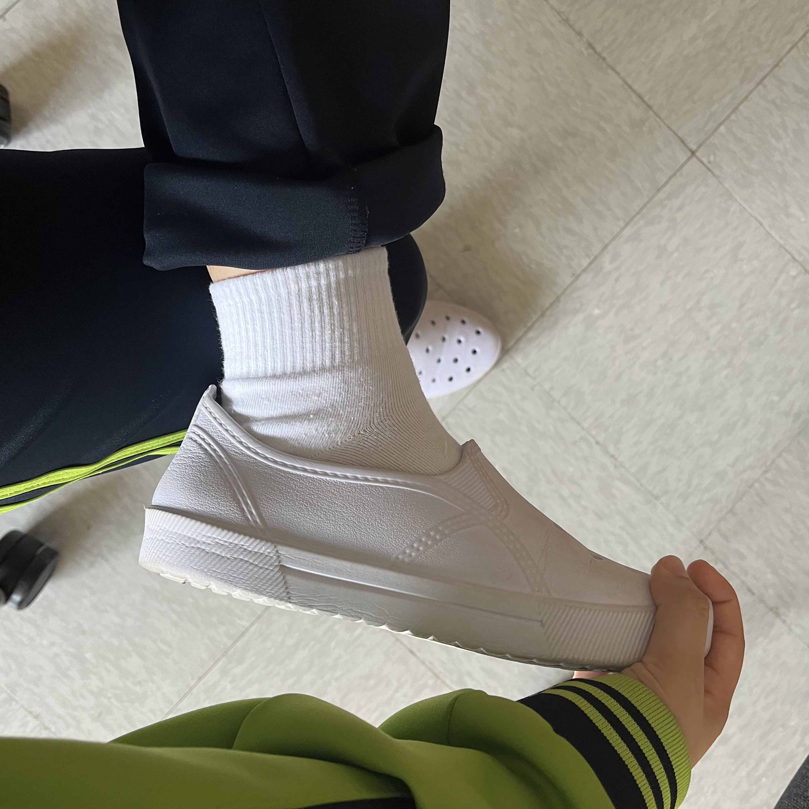
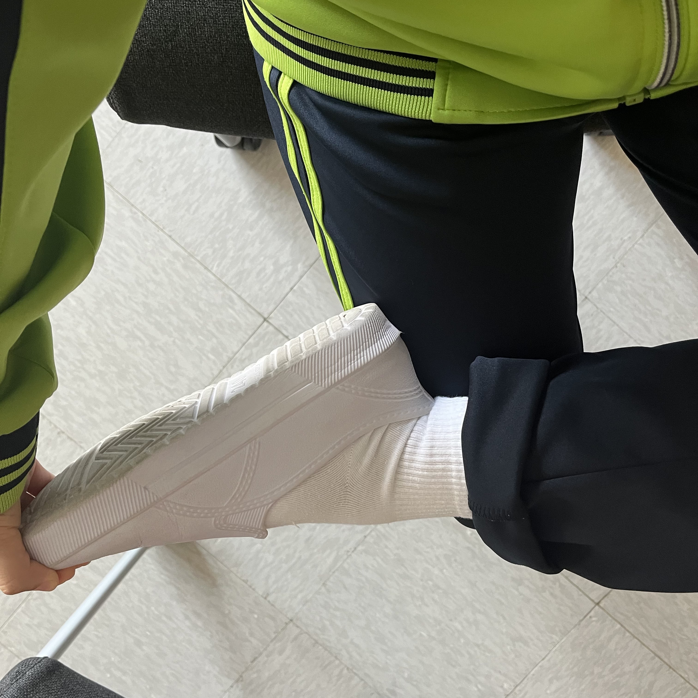

탈출! 거북목
신체 : 발목
시간 : 2분 20초
|  |
1. 2세트 | 10회1. 편안한 자세로 자리에 앉아 몸의 긴장을 풀어준다. 2. 오른쪽 발목을 왼쪽 허벅지에 올린다. 3. 왼손으로 발바닥을 오른손으로 발가락을 감싸 쥔다. 4. 시계 방향과 반시계 방향으로 발목을 돌려준다. |
|  |
2. 2세트 | 20초1. 양손으로 발을 감싸 쥐고 몸쪽으로 지그시 당겨준다. 2. 발목 바깥쪽, 종아리 바깥쪽에 붙어 있는 근육이 늘어나는 것이 느껴져야 한다. 3. 최대한 이완된 상태에서 숨을 내쉬며 자세를 유지한다. |